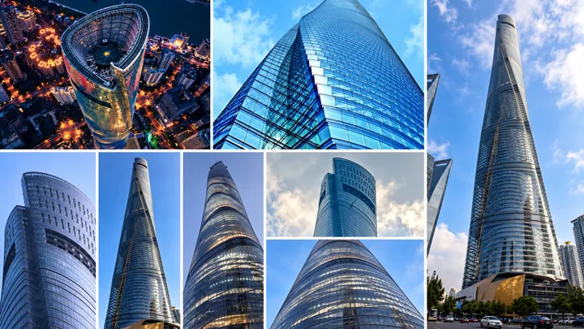
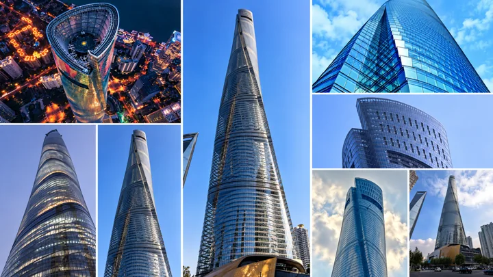

Chapter 01 / 1. Shanghai Tower
A skyline worth looking up for.
I began with the tower's twist, its blue glass, and the way the same shape changes after dark. These references and mood-board variations are where my Shanghai collection starts.

Mood-board variations · 4 images


